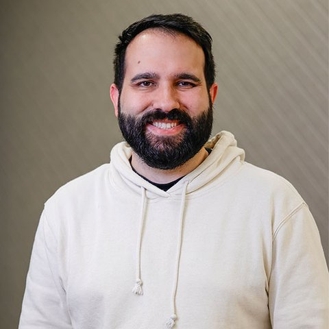
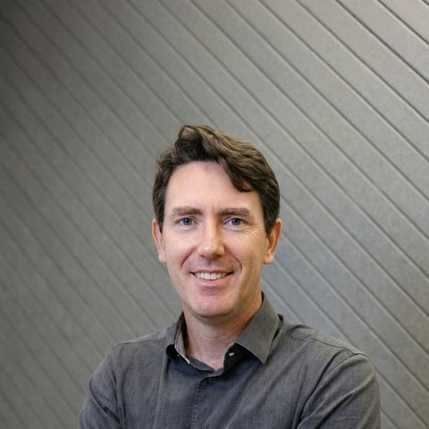

M8 EC - Planning da Sprint 3
Prof. Nicola
Cada um responde sozinho. Guarde o seu código: ele volta na semana 10.
Como validar um desafio
Antes de começar
Escolha um desafio e me avise que vai trabalhar nele, contando a estratégia de solução que pretende seguir. Posso marcar uma mentoria para ajudar.
Durante o desenvolvimento
Desenvolva a solução e escreva o resultado como short paper, no template que vou fornecer.
Pelo Slack
Envie o short paper com uma mensagem dizendo por que o trabalho é uma inovação e onde você acha que podemos publicá-lo.
Mérito da entrega
Avalio o mérito e decido o próximo passo. Rejeição e mentoria permitem reentrega.
Está boa → arguição
Abaixo do desafio → rejeição
Falta refinar → mentoria
Presencial
Faço perguntas técnicas sobre o seu trabalho e sobre os conteúdos do módulo. Se eu sair insatisfeito, nego o pedido ou marco uma nova data para você se preparar melhor.
Desafio aprovado
Você escolhe as duas notas que serão alteradas. O trabalho provavelmente é publicável: vamos atrás da publicação, que também rende horas complementares.
Robô físico
Sprint 3
Obrigatório: implementar e integrar o robô físico, navegando em ambiente real a partir das mesmas solicitações ao assistente.
Sprint 4
Modularidade em simulação. Mostrar também no robô físico é opcional.
Harness do agente
Harness
Contexto e orquestração
prompts · ferramentas · memória
compactação · roteamento · guardrails
Runtime
loop · estado · transporte
autenticação · gatilhos · observabilidade
Jediah Katz · AI Engineer NYC 2026
Semana 5
| seg 09/11 |  | Planning da Sprint 3 | Orientação |
| ter 10/11troca | Redes recorrentes: RNN, LSTM e GRU | Computação | |
| qua 11/11troca | Team building: rotinas colaborativas | Liderança | |
| qui 12/11troca | Consumidor figital e omnichannel | Negócios | |
| sex 13/11 | Seq2seq e mecanismo de atenção | Computação |
Marcadas: aulas que trocaram de dia.
Semana 6
| seg 16/11 | Pose, frames e odometria | Computação | |
| ter 17/11 | Representação do ambiente | Computação | |
| qua 18/11 |  | A matemática do backpropagation | Matemática |
| qui 19/11 | Entrega da Sprint 3 | Orientação | |
| sex 20/11 | Feriado |